Créditos de las fotos de notas
Las fotos de las notas olfativas son de Wikimedia Commons, usadas bajo sus licencias libres (CC0, dominio público, CC BY y CC BY-SA). Fueron recortadas en círculo. Gracias a sus autores.
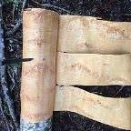
Abedul
Langetatud kase koorimine. Kõrvemaa, 2017. aprill..jpg · Sillerkiil · CC BY-SA 4.0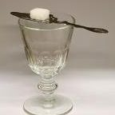
Absenta, Ron
Absinthe glass, spoon and sugar.jpg · Cornischong at Luxembourgish Wikipedia · CC BY-SA 3.0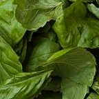
Albahaca
Basil leaves.jpg · Paul Goyette · CC BY-SA 2.0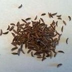
Alcaravea
Caraway Seed.jpg · OttawaAC · CC BY-SA 3.0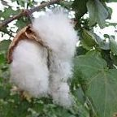
Algodón
Cotton - പരുത്തി 03.JPG · കാക്കര · CC BY-SA 3.0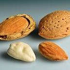
Almendra
Almonds - in shell, shell cracked open, shelled, blanched.jpg · Ivar Leidus · CC BY-SA 4.0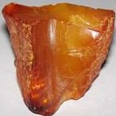
Ámbar
Amber (resinite) (Baltics) 2.jpg · James St. John · CC BY 2.0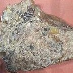
Ámbar gris
Ambergris, Skagway Museum.JPG · Wmpearl · CC0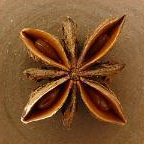
Anís
Illicium verum20170511 7548.jpg · Bff · CC BY-SA 4.0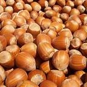
Avellana
Hazelnuts.jpg · Fir0002 at English Wikipedia · CC BY-SA 3.0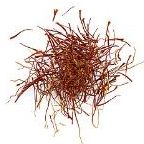
Azafrán
Iran saffron threads.jpg · Rainer Zenz · Public domain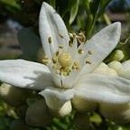
Azahar, Flor de naranjo, Neroli
Orange Blossom.JPG · Alexander Hardin · CC BY 3.0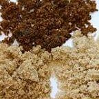
Azúcar morena
Brown sugar examples.JPG · Moe Rubenzahl · CC BY-SA 4.0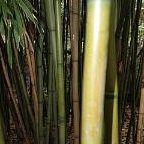
Bambú
Bamboo stalks 2908.jpg · Chris Light · CC BY-SA 4.0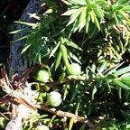
Bayas de enebro, Enebro
Juniperus communis subsp. phoenicia Berries and Leaves SierraNevada.jpg · Javier martin · Public domain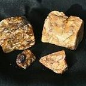
Benjuí
Kemenyan 110112-11054 tdp.jpg · Wibowo Djatmiko (Wie146) · CC BY-SA 3.0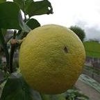
Bergamota
Citrus bergamia fructus.jpg · Rillke · CC BY-SA 3.0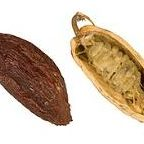
Cacao
Theobroma cacao MHNT.BOT.2004.0.204.jpg · Roger Culos · CC BY-SA 3.0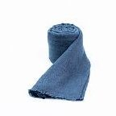
Cachemira
Cashmere Wool Scarves.jpg · kaschmirprodukte.de · CC BY-SA 4.0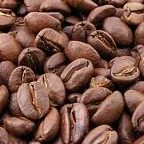
Café
Roasted coffee beans.jpg · MarkSweep · Public domain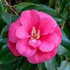
Camelia
Camellia japonica NBG.jpg · PumpkinSky · CC BY-SA 3.0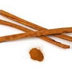
Canela
Canelle Cinnamomum burmanni Luc Viatour.jpg · Luc Viatour · CC BY-SA 3.0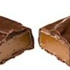
Caramelo
Milky-Way-Simply-Caramel-Split.jpg · Evan-Amos · CC0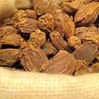
Cardamomo
Black cardamom pods.jpg · CNEcija12345 · CC BY-SA 4.0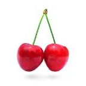
Cereza
Cherry Stella444.jpg · Benjamint444, edited by Fir0002 · CC BY-SA 3.0- Champaña
Champagne Glass MET DP236706.jpg · Bakewell, Pears and Company · CC0 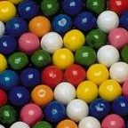
Chicle
Bubble gum at the Haribo factory.jpg · Martial BACQUET · CC BY-SA 3.0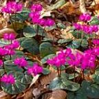
Ciclamen
Cyclamen coum (d.j.b.) 02.jpg · Dominicus Johannes Bergsma · CC BY-SA 4.0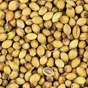
Cilantro
Coriander Seeds.jpg · Sanjay Acharya · CC BY-SA 4.0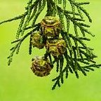
Ciprés
Cipreskegels van een Chamaecyparis lawsoniana). 02-09-2025. (actm.) 02.jpg · Agnes Monkelbaan · CC BY-SA 4.0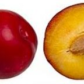
Ciruela
Red-Plums.jpg · Evan-Amos · CC0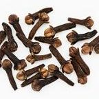
Clavo
2023 Goździki.jpg · Jacek Halicki · CC BY-SA 4.0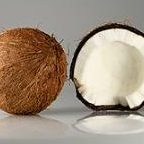
Coco
Coconuts - single and cracked open.jpg · Ivar Leidus · CC BY-SA 4.0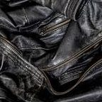
Cuero
Black worn leather jacket detail 1.jpg · W.carter · CC0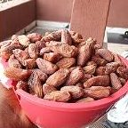
Dátil
Date Fruit.jpg · Lebron jay · CC BY-SA 4.0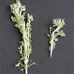
Davana
Artemisia pallens-1-xavier cottage-yercaud-salem-India.jpg · Yercaud-elango · CC BY-SA 4.0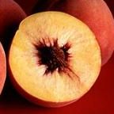
Durazno
Autumn Red peaches.jpg · Jack Dykinga, USDA · Public domain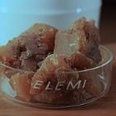
Elemi
Deutsches Apothekenmuseum - Elemi.jpg · Zinnmann · CC BY 4.0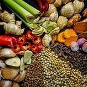
Especias
Bumbu dan Rempah - rempah.jpg · Galeri ega · CC BY-SA 4.0- Flor de loto, Loto
Lotus flower (978659).jpg · Hong Zhang (jennyzhh2008) · CC0 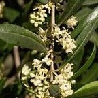
Flor de olivo
Olea europaea flowers Mattinata.jpg · Nefronus · CC BY-SA 4.0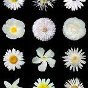
Flores blancas
White flowers b.jpg · Alvesgaspar · CC BY-SA 3.0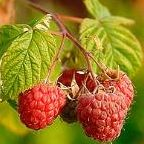
Frambuesa
Raspberries (Rubus Idaeus).jpg · Juhanson · CC BY-SA 3.0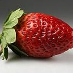
Fresa
Garden strawberry (Fragaria × ananassa) single2.jpg · Ivar Leidus · CC BY-SA 4.0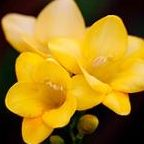
Fresia
Flower, Freesia - Flickr - nekonomania.jpg · Yoko Nekonomania · CC BY 2.0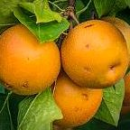
Frutas
Pyrus pyrifolia fruit on tree PS 2z LR.jpg · PumpkinSky · CC BY-SA 4.0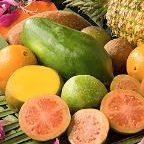
Frutas tropicales
ARS tropical fruit no labels.jpg · Penny Greb · Public domain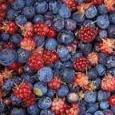
Frutos rojos
Alaska wild berries.jpg · U.S. Fish and Wildlife Service · Public domain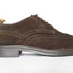
Gamuza
A Derby of suede leather with brogues.jpg · Wikipedia-ce · CC0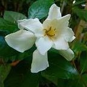
Gardenia
Gardenia flower, Badurtala.jpg · Yahya · CC BY-SA 4.0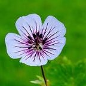
Geranio
Geranium wallichianum 'Crystal Lake' 06.JPG · Dominicus Johannes Bergsma · CC BY-SA 4.0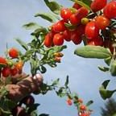
Goji
Lycium - Ripe goji berries.jpg · daveeza from okanagan, canada · CC BY-SA 2.0- Granada
Pomegranate fruit - whole and piece with arils.jpg · Ivar Leidus · CC BY-SA 4.0 - Grosella blanca
White currant (Ribes sativum).jpg · mako from Kangasala, Finland · CC BY 2.0 - Grosella negra
Blackcurrant in basket 2021 G1.jpg · George Chernilevsky · CC BY-SA 4.0 - Guayaba
Goiaba vermelha.jpg · Rodrigo.Argenton · CC BY-SA 4.0 - Haba tonka
Tonka Beans.jpg · Mecredis / Fred Benenson · CC BY-SA 3.0 - Heliotropo
Starr 080103-1254 Heliotropium arborescens.jpg · Forest & Kim Starr · CC BY 3.0 - Hibisco
Hibiscus petal.jpg · Nvineeth · CC BY-SA 3.0 - Hinojo
Fennel bulb.jpg · Tiia Monto · CC BY-SA 4.0 - Hoja de laurel
Bay Leaves.JPG · Miansari66 · Public domain - Hojas verdes
Fresh green leaves of a tree.jpg · Knowledge and philosophy · CC BY-SA 4.0 - Incienso
Olibanum resin.jpg · Peter Presslein · CC BY-SA 3.0 - Iris
Verschiedenfarbige Schwertlilie (Iris versicolor)-20200603-RM-100257.jpg · Ermell · CC BY-SA 4.0 - Jacinto
Hyacinthus orientalis Blüte 01.JPG · Uoaei1 · CC BY-SA 3.0 - Jazmín
(MHNT) Jasminum polyanthum – flowers and buds.jpg · Didier Descouens · CC BY-SA 4.0 - Jengibre, Maninka
Fresh ginger rhizome 01.jpg · Friday musa · CC BY-SA 4.0 - Kiwi
Kiwi (Actinidia chinensis) 1 Luc Viatour.jpg · Luc Viatour · CC BY-SA 2.5 - Ládano
Cistus ladanifer April 2026-1.jpg · Alvesgaspar · CC BY-SA 4.0 - Lavanda
Bee on Lavender Blossom 2.jpg · Martin Falbisoner · CC BY-SA 4.0 - Leche
Glass of Milk (33657535532).jpg · NIAID · CC BY 2.0 - Lichi
Lychee fruit and seed.jpg · Shwabb1 · CC BY-SA 4.0 - Lila
Syringa vulgaris flowers.jpg · Krzysztof Golik · CC BY-SA 4.0 - Lima
Two limes.jpg · Rhododendrites · CC BY-SA 4.0 - Limón
Lemon.jpg · André Karwath aka Aka · CC BY-SA 2.5 - Lirio del valle
Lelietje-van-dalen of meiklokje (Convallaria majalis). 14-05-2021 (actm.) 01.jpg · Agnes Monkelbaan · CC BY-SA 4.0 - Madera
Beilstein - Schmidhausen - Hebelstraße - Holzzaun - Augen (1).jpg · Roman Eisele · CC BY-SA 4.0 - Madera de guayaco
Lignum Vitae.jpg · Tim van de Staak · CC BY-SA 4.0 - Magnolia
Magnolia flower Duke campus.jpg · DavetheMage · CC BY 3.0 - Malvavisco
White Marshmallows.jpg · John Morgan · CC BY 2.0 - Mandarina
2023 Mandarynki.jpg · Jacek Halicki · CC BY-SA 4.0 - Mango
Mangos - single and halved.jpg · Ivar Leidus · CC BY-SA 4.0 - Manzana
Red Apple.jpg · Abhijit Tembhekar · CC BY 2.0 - Manzana verde
Green apple 01.jpg · Krzysztof Golik · CC BY-SA 4.0 - Maracuyá
Passiflora Edulis Open Fruit2.jpg · Alexander Klink · CC BY 3.0 - Melón
Cucumis melo on white background.jpg · ver página del archivo · Wikimedia Commons - Membrillo
Quince (10895s).jpg · Rhododendrites · CC BY-SA 4.0 - Menta
Mentha sp.001 - A Pobra do Caramiñal.JPG · Fernando Losada Rodríguez · CC BY-SA 4.0 - Miel
Three French monofloral honey jars.jpg · Hayden Soloviev · CC BY 4.0 - Mimosa
Mimosa-0001.jpg · Claudio Donati · CC BY-SA 4.0 - Mirra
Myrrh-20180430.jpg · Nesnad · CC BY 4.0 - Mirto
Blue myrtle berries sardinia.JPG · Japs 88 · CC BY-SA 3.0 - Mora
Blackberry (Rubus fruticosus).jpg · Ivar Leidus · CC BY-SA 4.0 - Musgo de roble
Am Spitzberg bei Limbach 05.jpg · Stephan van Helden · CC BY-SA 4.0 - Naranja
Ambersweet oranges.jpg · USDA · Public domain - Naranja amarga
Citrus aurantium.jpg · A. Barra · CC BY-SA 4.0 - Narciso
Narcissus poeticus Spechtensee 01.JPG · Uoaei1 · CC BY-SA 4.0 - Nardo
Polianthes tuberosa, Burdwan, West Bengal, India 25 10 2012.jpg · JDP90 (Joydeep) · CC BY-SA 3.0 - Nenúfar
Daubeny's water lily at BBG (50824).jpg · Rhododendrites · CC BY-SA 4.0 - Notas acuáticas
Water drop 001.jpg · José Manuel Suárez · CC BY 2.0 - Notas marinas
Baltic Sea view from Schmiedeberg hill in Rerik, 2025-06-23.jpg · Radomianin · CC BY-SA 4.0 - Notas verdes
Fresh green leaves - geograph.org.uk - 6793638.jpg · Bob Harvey · CC BY-SA 2.0 - Nuez moscada
Nutmeg ready.jpg · Terrence Coombes · CC BY-SA 4.0 - Orquídea
Orchid at USBG (18160).jpg · Rhododendrites · CC BY-SA 4.0 - Oud
Highend Agarwood Kyara.jpg · Stephan Alexander Peter · CC0 - Pachulí
Pogostemon cablin 001.jpg · Valérie7 · CC BY-SA 3.0 - Papaya
Papaya - longitudinal section.jpg · Ivar Leidus · CC BY-SA 4.0 - Peonía
Tree peony flower 2021 G3.jpg · George Chernilevsky · CC BY-SA 4.0 - Pera
D'anjou pear.jpg · Rhododendrites · CC BY-SA 4.0 - Petitgrain
Water Droplet on Bitter Orange Leaf.jpg · بدر · CC BY-SA 4.0 - Pimienta, Pimienta negra
Black Peppercorns (4422070187).jpg · Ryan Snyder · CC BY 2.0 - Pimienta blanca
White Peppercorns.jpg · Misterneedlemouse · CC0 - Pimienta rosa
Pink Peppercorns, Penzeys Spices, Arlington Heights MA.jpg · John Phelan · CC BY-SA 3.0 - Pino
Closeup of an Aleppo Pine branch, Malta 2.jpg · Godwin Borg · CC BY-SA 4.0 - Piña
Cut Fruits on retail.jpg · ChimaBee · CC BY-SA 4.0 - Pitahaya
A half cut Pitaya (Red dragon fruit) in West Bengal, India.jpg · Billjones94 · CC BY-SA 4.0 - Pomelo
Citrus paradisi (Grapefruit, pink) white bg.jpg · א (Aleph) · CC BY-SA 2.5 - Praliné
013 Austrian chocolates in Vienna - assorted fancy chocolate pralines.jpg · Marek Ślusarczyk (Tupungato) · CC BY 3.0 - Resinas
Resin with insect (aka).jpg · André Karwath aka Aka · CC BY-SA 2.5 - Romero
Rosmarinus officinalis (1).jpg · T137 · CC BY-SA 3.0 - Rosa
Comestible rose in the Laquenexy orchard garden, Moselle, France (01).jpg · M0tty · CC BY-SA 4.0 - Ruibarbo
Rheum rhabarbarum.2006-04-27.uellue.jpg · Dieter Weber · CC BY-SA 3.0 - Sal
Dead Sea salt crystals.jpg · Petar Milošević · CC BY-SA 4.0 - Salvia
20260614 Salvia officinalis 02.jpg · Flocci Nivis · CC BY 4.0 - Sándalo
Sandalwood sticks on a plate.jpg · Fumikas Sagisavas · CC0 - Sandía
البطيخ الأحمر.JPG · فارس البلغم · CC BY-SA 3.0 - Tabaco
Dried Tobacco Leaves.jpg · Keshuseeker · CC BY-SA 4.0 - Té
Zhu-Ye-Qing-Tea-03.jpg · CEphoto, Uwe Aranas · CC BY-SA 4.0 - Tilo
Linden Viburnum ‘Oneida’ Viburnum dilatatum ‘Oneida’ flower spring.jpg · Cossey25 · CC BY-SA 4.0 - Toronja
Grapefruits - whole-halved-segments.jpg · Ivar Leidus · CC BY-SA 4.0 - Vainilla, Vainilla negra
Vanilla 6beans.JPG · B.navez · CC BY-SA 3.0 - Vetiver
Vetiveria zizanoides dsc07810.jpg · David Monniaux · CC BY-SA 3.0 - Violeta
Viola odorata 20210226.jpg · Uoaei1 · CC BY-SA 4.0 - Ylang-ylang
Ylang ylang flowers -Cananga odorata.jpg · Vinayaraj · CC BY-SA 3.0 - Yuzu
Yuzu tardif.jpg · Jpbrigand · CC BY-SA 4.0 - Cedro
Dry wood texture.jpg · Martin Vorel · CC BY-SA 4.0 - Almizcle
Fluffy white cotton boll.jpg · Kaushlendrapathe · CC BY 4.0 - Regaliz
Polypodium glycyrrhiza roots exposed.jpg · Russetburbank · CC BY-SA 4.0